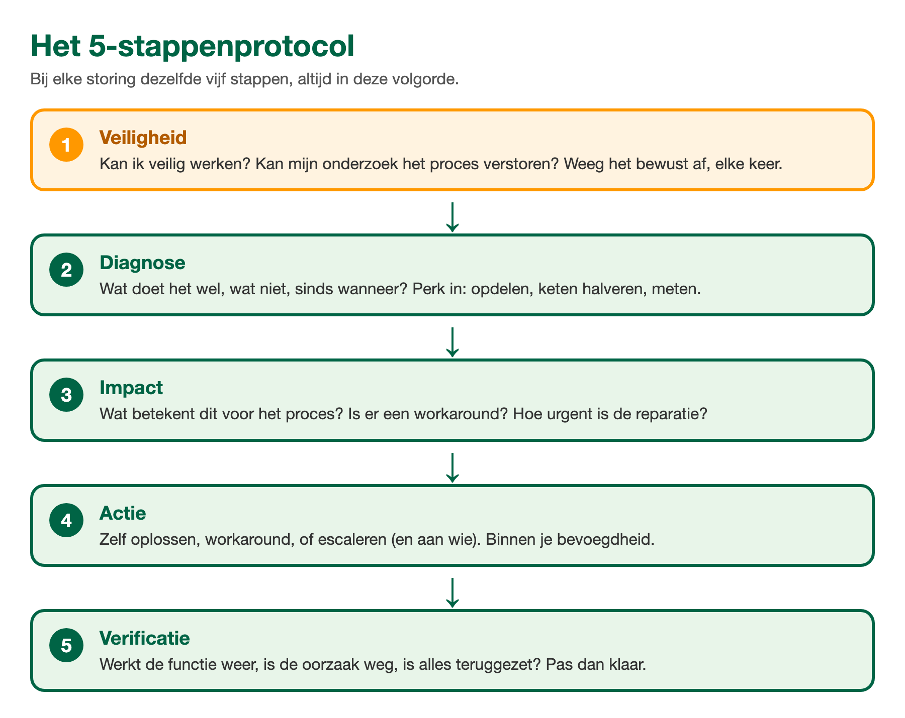

ANA Module 5
2.1 Leerdoelen
Na het volgen van dit hoofdstuk kun je:
- Uitleggen waarom een vaste aanpak sneller en veiliger is dan gokken en proberen
- De vijf stappen van het storingsprotocol benoemen en in de juiste volgorde toepassen
- Een storing inperken door de installatie in logische delen op te delen en ketens uit te sluiten
- Een schema of tekening gebruiken om te bepalen waar je gaat controleren
2.2 Waarom een vaste aanpak?
Iedereen kent het: je bent je sleutels kwijt en je rent drie keer dezelfde kamers door, tilt drie keer hetzelfde kussen op, en vindt niets. Totdat je even stilstaat en nadenkt: waar had ik ze voor het laatst? Wat heb ik daarna gedaan? Binnen twee minuten heb je ze.
Storing zoeken werkt precies zo. Wie meteen begint te sleutelen, doet vaak dubbel werk, slaat mogelijkheden over en maakt soms meer kapot dan er al was. Wie eerst een paar minuten denkt volgens een vaste aanpak, zoekt daarna gericht. In de industrie komt daar nog iets bij: lukraak proberen kan gevaarlijk zijn. Een klep openzetten om te kijken wat er gebeurt is in een fabriek geen experiment maar een risico.
2.3 Het 5-stappenprotocol
In deze cursus gebruiken we bij elke storing hetzelfde protocol van vijf stappen. Leer ze in deze volgorde, want de volgorde is het halve gereedschap:
- Stap 1, veiligheid. Beoordeel eerst of je veilig kunt werken. Draait er iets dat gestopt moet worden? Kan je onderzoek het proces verstoren? Ook als het antwoord 'geen risico' is: die afweging maak je bewust, elke keer.
- Stap 2, diagnose. Beschrijf de symptomen: wat doet het wel, wat niet, sinds wanneer. Verzamel gegevens en perk in waar de fout kan zitten. Dit is de stap waar de rest van dit hoofdstuk over gaat.
- Stap 3, impact. Wat betekent deze storing voor het proces? Is er een tijdelijke oplossing (workaround)? Hoe urgent is de reparatie? Een storing in een reservepomp is een andere situatie dan dezelfde storing in de enige pomp.
- Stap 4, actie. Kies en beschrijf je actie: zelf oplossen, een workaround, of escaleren (en aan wie). Hierover meer in hoofdstuk 5.
- Stap 5, verificatie. Als de storing is verholpen: controleer dat alles weer werkt en dat de oorzaak weg is. Een storing is pas opgelost als je dat hebt aangetoond, niet als het alarm toevallig uit is.
⚠️ Veiligheid staat niet voor niets op nummer 1. Elke ervaren monteur kent een verhaal van iemand die 'even snel' ging kijken. Eerst denken, dan meten, dan pas doen.

Het 5-stappenprotocol: altijd in deze volgorde, ook als de oplossing voor de hand lijkt te liggen.
🔍 Kennischeck: Je ziet bij binnenkomst meteen welke zekering eruit ligt. Wat doe je als eerste?
A) De zekering direct vervangen, dan is de storing het snelst verholpen
B) De trend erbij pakken om te zien sinds wanneer de storing bestaat
C) De impact bepalen: wat merkt het proces van deze uitgevallen groep
D) Beoordelen of je veilig kunt werken en wat je ingreep verstoort
2.4 Inperken: van installatie naar onderdeel
De diagnose-stap begint groot: ergens in deze installatie zit een fout. Dat gebied maak je stap voor stap kleiner, tot er een onderdeel overblijft dat je kunt controleren. Twee technieken helpen daarbij:
🗂 Opdelen in logische delen
Elke installatie is op te delen in blokken die je apart kunt beoordelen: toevoer, bewerking, afvoer. Of: sensor, signaalweg, verwerking, uitsturing. Vraag je per blok af: kan de fout hier zitten? Zo streep je hele delen tegelijk weg.
✂️ De keten volgen en halveren
Veel functies in een installatie zijn een keten: van een sensor, via kabels en verwerking, naar een scherm of een klep. Controleer een punt halverwege de keten. Is het signaal daar nog goed? Dan zit de fout verderop. Is het daar al fout? Dan zit hij ervoor. Met elke controle halveer je het zoekgebied.
Denk aan een slinger kerstverlichting waarvan de helft het niet doet. Je gaat niet elk lampje los checken: je kijkt waar het licht ophoudt. Precies op die grens zit je probleem. Dat is ketendenken, en het werkt in elke installatie hetzelfde.
📖 Praktijkvoorbeeld: de meting die wegviel
Een niveaumeting valt weg: het scherm in de controlekamer toont een foutwaarde. De keten is: sensor op de tank, kabel naar de veldkast, van de veldkast naar het besturingssysteem, en dan naar het scherm.
1. Check halverwege, in de veldkast: komt het signaal van de sensor daar binnen? Meetwaarde is normaal.
2. Conclusie: sensor en eerste kabeldeel zijn in orde. De fout zit tussen veldkast en scherm.
3. Volgende controle: de ingangskaart van het besturingssysteem. Daar blijkt het kanaal een foutstatus te geven.
Drie gerichte controles, en het zoekgebied is geslonken van 'ergens tussen tank en controlekamer' naar een kaart in een kast.
2.5 Schema's en tekeningen: je plattegrond bij het zoeken
Inperken gaat veel sneller met de tekening erbij. Schema's laten zien hoe de installatie in elkaar zit, welke onderdelen in een keten zitten en waar je kunt meten. Drie soorten kom je overal tegen:
🗺 Blokschema
Het grove overzicht: welke stappen doorloopt het proces. Handig om te bepalen in welk blok het probleem zit.
📐 Proces- en instrumentatieschema (P&ID)
De gedetailleerde kaart van leidingen, kleppen, apparaten en metingen met hun codes. Hiermee zie je precies wat er voor en na je verdachte onderdeel zit.
🔌 Kring- of aansluitschema
Het elektrische detail van een meetkring of voeding: welke draad, welke klem, welke kast. Onmisbaar zodra je echt gaat meten.
De werkwijze is steeds hetzelfde: wijs op de tekening de keten aan waar je storing in zit, kies daarop je controlepunten, en streep af wat je hebt uitgesloten. Zo voorkom je dat je in het veld verdwaalt of het verkeerde apparaat openmaakt.
🔍 Kennischeck: Een niveaumeting geeft op het scherm een foutwaarde. In de veldkast, halverwege de keten, meet je een normaal signaal. Waar zit de fout?
A) Tussen de sensor en de veldkast, in het eerste deel van de keten
B) Tussen de veldkast en het scherm, in het tweede deel van de keten
C) In de sensor zelf, want daar beginnen de meeste storingen
D) Dat is met een meting halverwege de keten niet te zeggen
2.6 Gegevens verzamelen: wat is er veranderd?
Naast meten en kijken is er een goudmijn die vaak wordt overgeslagen: de administratie van de installatie zelf.
- Trends en alarmlijsten. Wanneer begon het precies, en wat gebeurde er rond dat moment met de andere metingen?
- Logboek en overdracht. Wat hebben de vorige ploegen gezien of gedaan?
- Onderhoudshistorie. Is dit onderdeel vaker gestoord geweest? Een herhaalstoring wijst bijna altijd op een grondoorzaak die nooit is aangepakt (daarover gaat hoofdstuk 3).
En stel vooral de vraag: wat is er kort voor de storing veranderd? Onderhoud gehad, een ander product, een wisseling van ploeg, een aanpassing in het systeem, ander weer. Verreweg de meeste storingen volgen op een verandering. Vind de verandering en je hebt vaak de kortste route naar de oorzaak.
2.7 Samenvatting
✅ Dit neem je mee
- Vaste aanpak verslaat gokken: sneller, en in een fabriek vooral veiliger.
- Het 5-stappenprotocol is de kapstok: veiligheid, diagnose, impact, actie, verificatie. Altijd in die volgorde.
- Inperken doe je door op te delen in logische blokken en de keten te halveren: elke controle maakt het zoekgebied kleiner.
- Schema's zijn je plattegrond: kies er je controlepunten mee en streep af wat is uitgesloten.
- Zoek altijd naar wat er kort voor de storing is veranderd.
📄 Naslagkaart: systematisch storing zoeken
Het hele protocol op een A4, voor naast je op de werkbank. Ook handig bij de praktijkopdrachten.
Download de naslagkaart (PDF) →